大剑直伤灵刃 44k-37k 灌注+食物
|幻影防御，幻影除魔，狂刃风暴，旋刃魂曲，幻影剑客，利刃呼唤，千刀万剐，5豆=和谐咏刃，心灵穿刺，幻影狂战，幻影狂战>>2000=幻影狂战黑=幻光纹章，镜像飞刃，5豆=悲伤咏刃，和谐咏刃>6500=不谐咏刃，剑刃暴雨，利刃呼唤>>2000=剑切大剑，镜像飞刃>>2000=大剑切剑||
幻影防御,z,767|幻影除魔,c,750|狂刃风暴,3,450|旋刃魂曲,f5,1|幻影剑客,5,884|利刃呼唤,2,435,,,,,,,,,,,0,,,,,,触发,0,,0,,,5000|千刀万剐,b|5豆,,,,,,,,,,,,,,,,,,,触发,0,,0,1|和谐咏刃,f1,636|心灵穿刺,3,316|幻影狂战,4,568,,,,,,,,,,b,0,,,,,,触发,0,,0,,,9000|幻影狂战黑|幻光纹章,e,780,4,568,,,,,,,,b|镜像飞刃,2,750,,,,,,,,,,,0,,,,,,触发,0,,0,,,5000|悲伤咏刃,F2,468|不谐咏刃,f3,485|剑刃暴雨,x,667|剑切大剑,`,150,3,350|大剑切剑,`,150,5,880
[&DQcKGQEdQiojDyMP3RqPAY8BfwGGAYIB5RrtEgAAAAAAAAAAAAAAAAAAAAADMgAvAFoAAA==]
项链刺客，其余全狂战，潜行者古物，武器大剑 匕剑 武勇、精确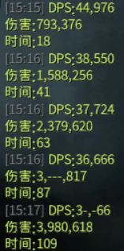
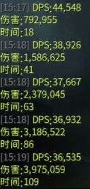
烟花古物 跟潜行者差不多，推荐潜行者
毕竟远程优势大点，没做长矛的，可以自行修改
另外，灵刃需要更新到最新1.85，并关闭部分功能
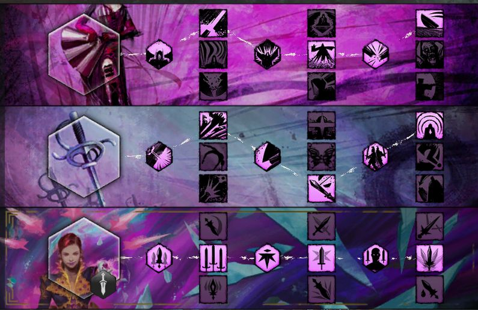
项链刺客，其余全狂战，潜行者古物，武器大剑 匕剑 武勇、精确
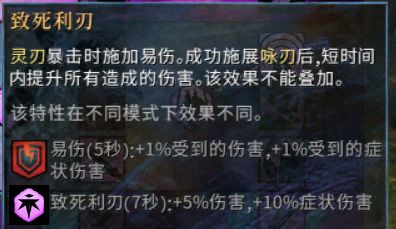
这个条件循环中加入了判断
和谐咏刃>6500=不谐咏刃
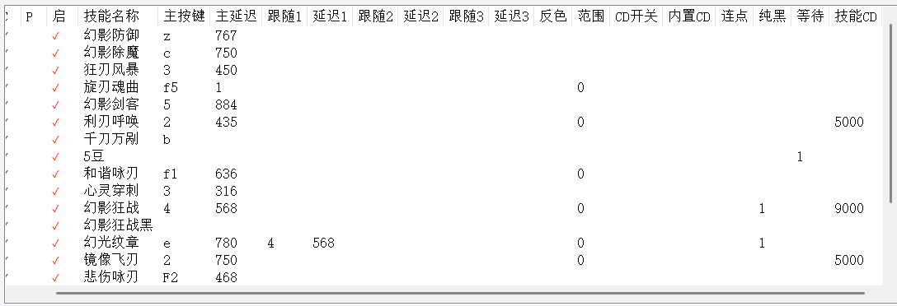
注意部分技能需要添加技能cd
幻影狂战，幻影狂战>>2000=幻影狂战黑=幻光纹章
这个标识，大剑4，剩余cd大于2秒，同时大剑4黑，才使用幻光
如不会判断，可改成 大剑4黑=幻光
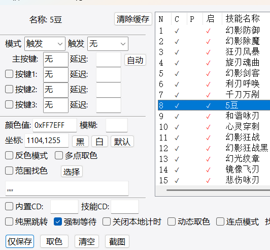
另外，5豆记得勾选强制等待
也就是
5豆=和谐咏刃 ，5豆=悲伤咏刃这类包含5豆条件的技能，必须等待5豆这个条件消失后，5豆变色后才会跳出，防止被其他技能打断。
这个判断很早就加了，应该出了灵刃没什么职业需要。
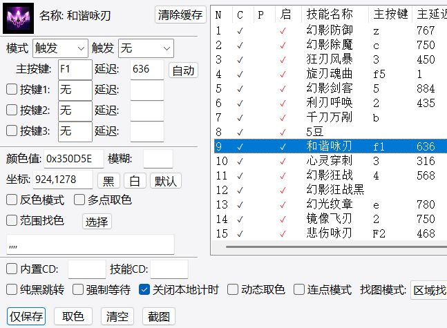
这个技能记得勾选关闭本地计时，否则会错误读取前置条件的本地时间，错误释放。
有问题留言，有能力的可自行修改
评论列表（34）
为什么伤害掉这么快
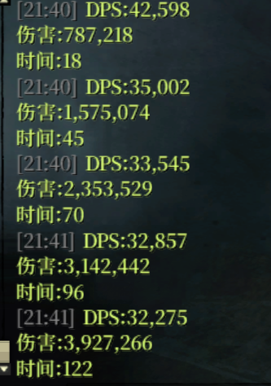
@CXQ0000 差别太大就是取色不对，或者配装
大佬为什么点开始没任何反应呀
@八戒 管理员运行，如果技能取色没问题，不释放，检查f9-颜色测试，不支持画质插件。
@melis 颜色测试全都是一致的 也从来没用过画质插件
@melis
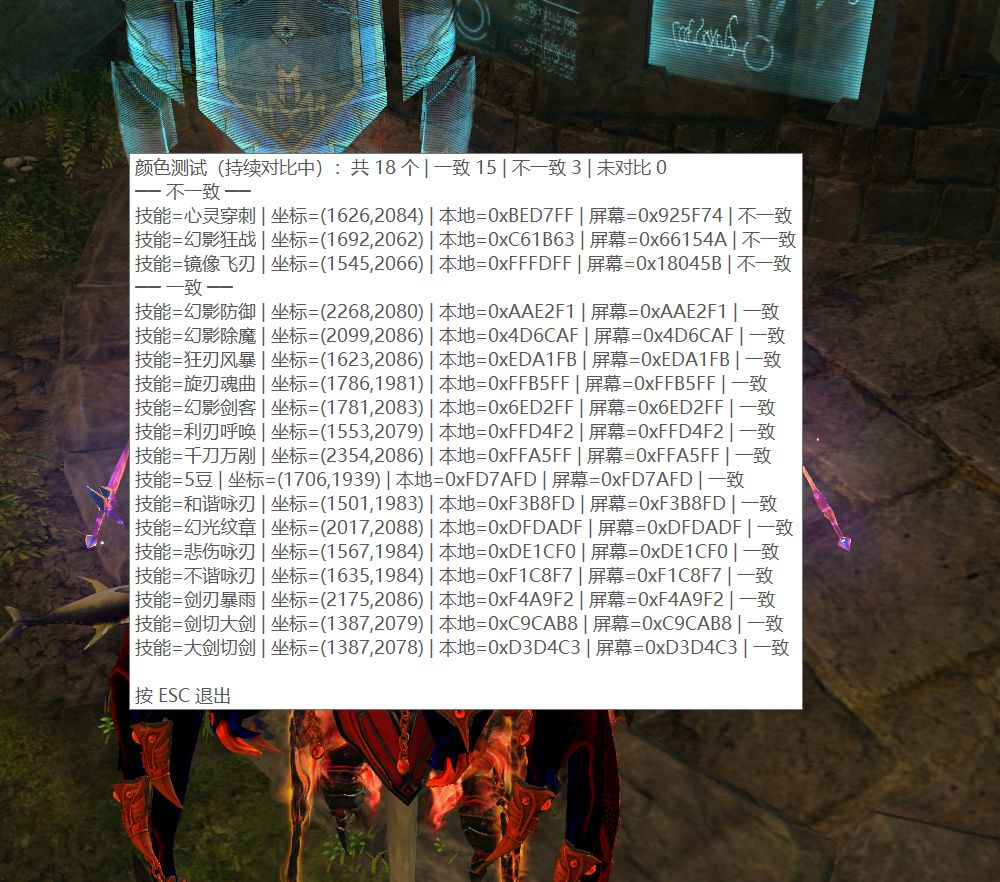
@melis 大佬找到原因了 识别模式不能选DXGI 换了别的就好了
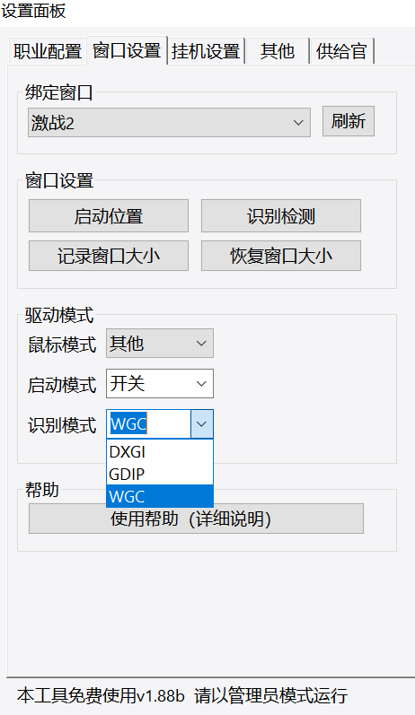
不会放大剑2是咋回事啊，纹章也不用
@swtbotw 大剑4取色注意避免黑色，会导致跟冷却中冲突，切武器要填入大剑2 剑2的技能延迟，不能为空
请问一下，正常运行，但是在F2会卡豆，满豆很久了就是不释放，F1打两过三轮才会释放出去，这要怎么改？是我哪里设置错了么？
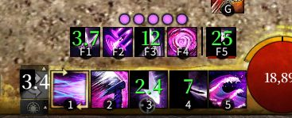
@青椒 5豆，增加一点模糊度，卡在f2唯一的条件只有 5豆=f2，5豆是紫色的取色，不是黑色。
@melis 我搞好了，谢谢
大佬，匕剑偶尔会切武器，但时机总是不对，大剑则不会自动切，切武器cd也设了9000，两个切武器的取色都是一样的吧，都是没在cd的时候，是因为我的版本只有1.8吗
@默剧 新版才支持技能2>>2000=切武器，技能2剩余cd大于2秒才切，之前版本写法是 技能2=1=切武器
400w桩老版本那套能到48-39
@扣扳机 老版本是哪个？ 没找到
@shawkk2i 全职业开发版 很早那套的确实高 就灵刃高 其他职业差不多 不知道为什么
不切武器不放 F2 F3
@小龙龙 f1\2\3，条件5豆 紫色的时候，+ f1、2、3图标取色，就2个条件怎么可能不放，多半是取色位置不对。
不切武器，也不放F123
@Lucifer 切武器条件，要自己设置技能cd，导入时没有，f123需要5豆条件，不识别5豆加点模糊度。
请问为什么会一直卡着4键。已经暂停循环了，然后微信打字什么的 都是卡着 一直按44444444444444444. 只有退出自由循环软件才好了
@shawkk2i 最新版已修，之前版本，f10模式为单次时，纯黑跳转bug，无法计时，导致无法跳出，连点模式下是正常。
@melis 好。那我换成连点 谢谢大佬
@melis求问，为啥不切武器
@17310494714 调整了全局延时，好像解决了
@17310494714 f9列表中，设置技能cd
666马上就抄
@晚安老妈明天见 +13 100W 和400w 都是38左右
大佬为什么不放f2f3
@言清欢 5豆=悲伤咏刃，取色问题
@melis 5豆是取色F1吗？
@小龙龙 灵刃第5个豆子紫色的时候
@melis 取了但是不放F2F3